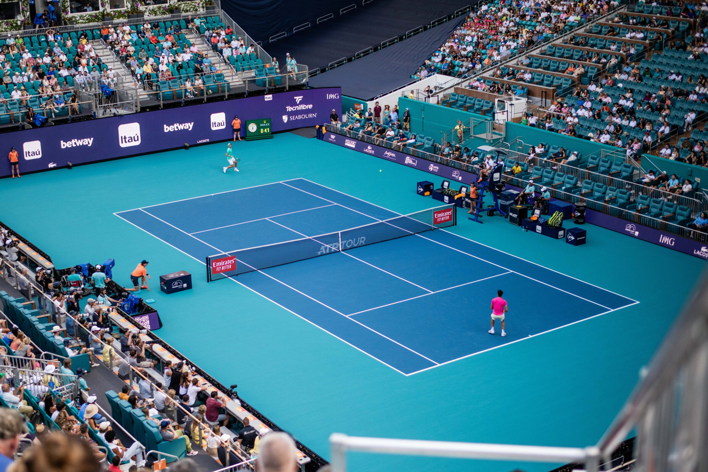

History
Explore how tennis grew from medieval indoor games into the global sport we know today.
Learn about the sport’s origins, pick up essential skills and gear, and connect with a passionate community of players.
Start Playing TodayOur mission is to make tennis approachable for everyone. Whether you’re completely new to the game or brushing up on the basics, this site covers everything from the sport’s rich history to the equipment you need and the techniques that will help you succeed on court.
Explore how tennis grew from medieval indoor games into the global sport we know today.
Learn what equipment you need, how scoring works, and where to begin as a new player.
Build a strong foundation with basic strokes, footwork, and beginner‑friendly practice tips.
Tennis is a lifelong sport that promotes fitness, coordination and mental sharpness. It can be enjoyed socially or competitively by players of all ages and abilities. Grab a racquet and join the fun—your journey starts here!
